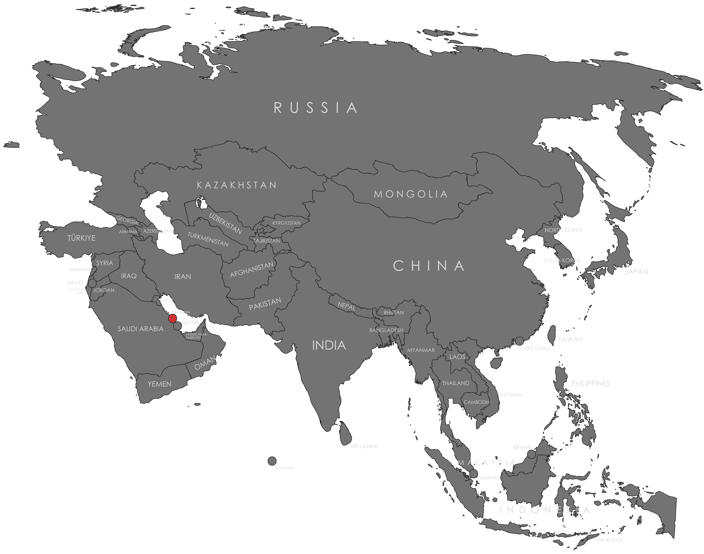

Specifications
- Local Name: البحرين (Al-Baḥrayn)
- Proportion: 3:5
- Name of the Flag: علم البحرين (Flag of Bahrain)
- Adopted: February 14, 2002
Symbolism
- Red: Historical use in the Persian Gulf and the region’s Islamic heritage
- White: Peace and diplomatic openness
- Five white points: The Five Pillars of Islam
- Serrated division: Distinctive national identity and historical significance
Colors:
Shapes / Symbols:
Meaning / Special Display
- The flag is raised during national celebrations such as Bahrain National Day to symbolize unity and national pride.
- Displayed across government buildings and coastal areas, reflecting Bahrain’s maritime culture.
Description
- The flag represents Bahrain’s cultural roots, Islamic identity, and longstanding maritime history.
- Citizens see it as a symbol of stability, pride, and the country’s commitment to peaceful development.

Return to Gallery